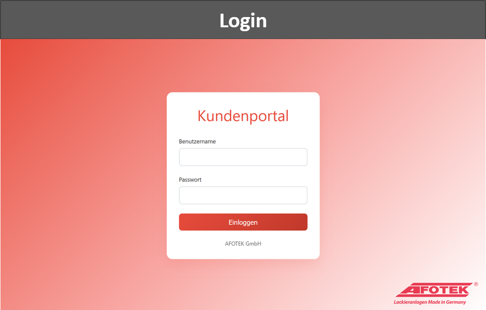
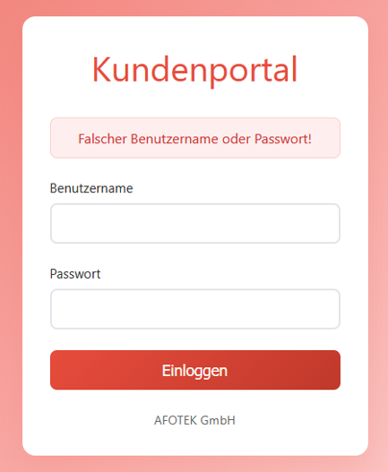
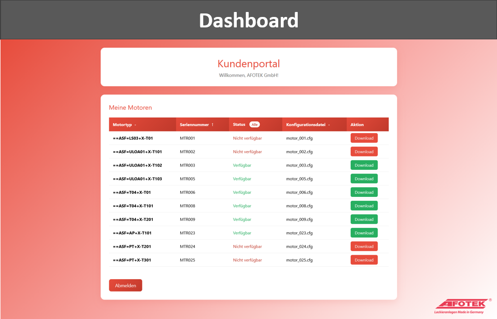
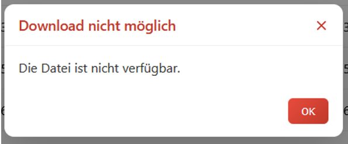
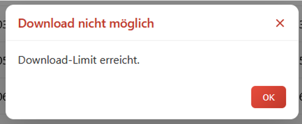
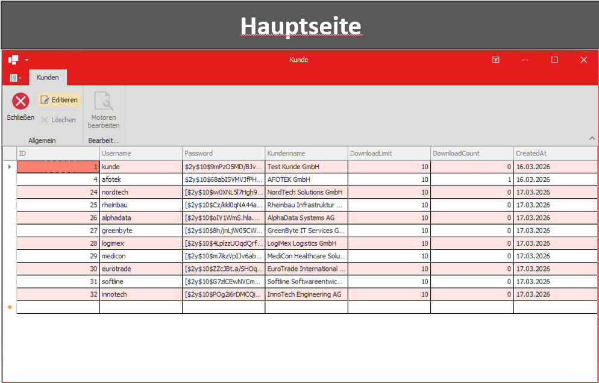
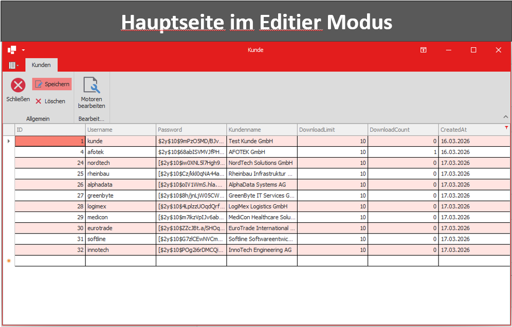
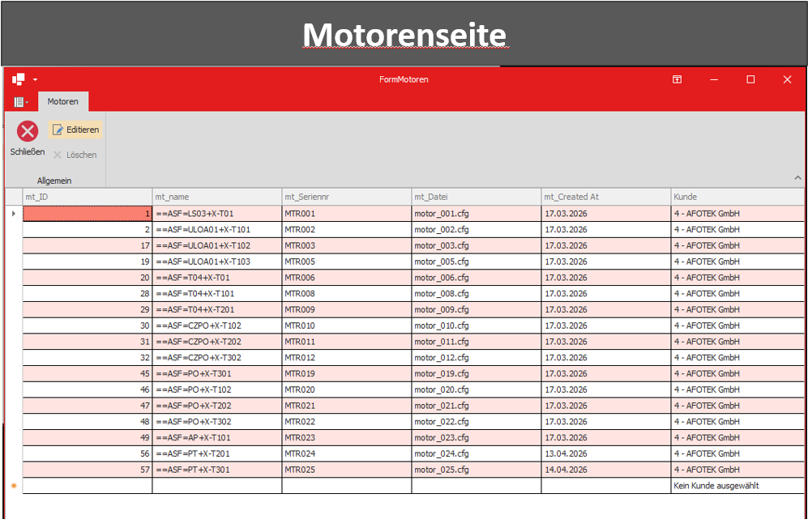

Projects
A selection of work from my apprenticeship and my own learning.
Web-based customer portal for motor configuration files
Final apprenticeship project · AFOTEK GmbH · 2026
The goal was a portal that lets customers retrieve configuration files for motors. I built a web-based interface with PHP and MySQL for customer access, plus a C# WinForms application used to manage and provide the data internally.
Focus areas: data modelling in MySQL, connecting the web and desktop parts to the same data source, and a clear interface for internal use.








Tetris
Personal project · 2026
A classic Tetris clone for Windows – my first graphical desktop app with C# and WPF (XAML) on .NET 8. All seven tetrominoes with rotation, a ghost piece showing where the block will land, a preview of the next piece, hard and soft drop, and increasing speed as your score grows.
Plus a persistent high score, a flash animation when rows are cleared, background music and sound effects, and start, pause and game-over menus. Cleanly split into game logic, playfield, blocks, sound and high-score management.

Personal portfolio website
Personal project · 2026
This website: a multi-page, responsive site with semantic HTML and CSS. It features a reusable layout, a dark mode via CSS variables and a mobile navigation.
Task Tracker
Personal project · 2026
An interactive to-do app in JavaScript: tasks can be added, edited, tracked by status (to do, in progress, done) and deleted. Small animations give it a smoother, more lively feel.
There are two versions: a browser version that stores tasks in localStorage, and a command-line version (CLI) with Node.js that keeps everything in a JSON file.
Dice games in C# – from a basic build to an extensible version
Personal projects · 2026
Two console games in C# that build on each other. I started with a simple dice game, then expanded it into a much larger version with power-ups and a cleanly extensible architecture.
1 · Roll the Dice
The starting point: over 10 rounds you roll against the computer – whoever rolls higher wins the round. With ASCII dice, a short animation and an object-oriented structure.

2 · Roll the Dice: Race Evolution
The expansion: a race to a target score, two game modes and five
power-ups with their own animations. The technical focus was
extensibility – the power-ups are based on a shared interface
(IPowerUp), so new ones can be added without changing
existing code.